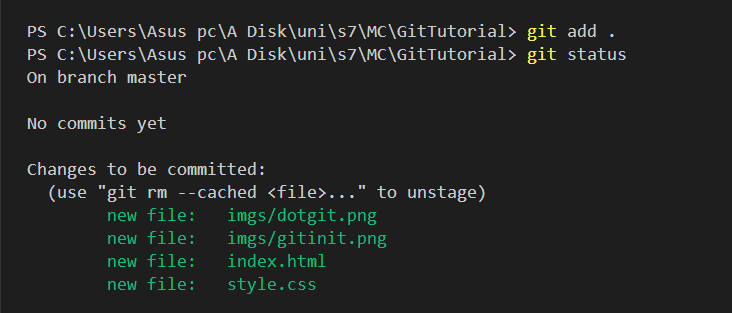
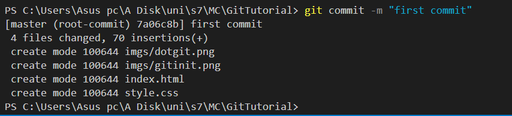
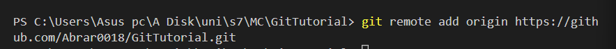
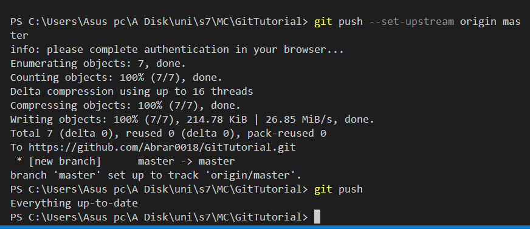
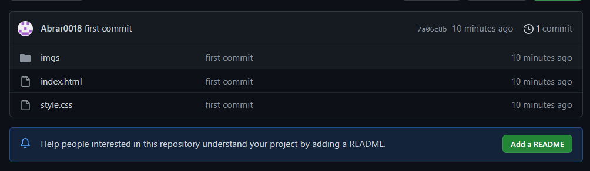
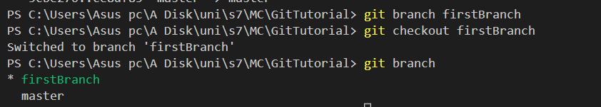
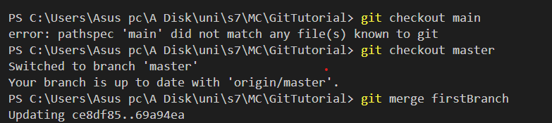

Git init
To initialize git repository first of all we need to run git init command. Using this an hidden folder named .git will be created in the present working directory.


To initialize git repository first of all we need to run git init command. Using this an hidden folder named .git will be created in the present working directory.
"git add ." command will add all files to the staging index.
These files will yet to be commited. To see there current status we used "git status" command
The git commit command captures a snapshot of the project's currently staged changes. Committed snapshots can be thought of as “safe” versions of a project—Git will never change them unless you explicitly ask it to.
To add a new remote, use the git remote add command on the terminal, in the directory your repository is stored at. The git remote add command takes two arguments: A unique remote name, for example, “my_awesome_new_remote_repo” A remote URL
The git push command is used to upload local repository content to a remote repository. Pushing is how you transfer commits from your local repository to a remote repo. It's the counterpart to git fetch , but whereas fetching imports commits to local branches, pushing exports commits to remote branches.
Now we can go on our repo and see the added files on it that we just pushed
In Git, branches are a part of your everyday development process. Git branches are effectively a pointer to a snapshot of your changes. When you want to add a new feature or fix a bug—no matter how big or how small—you spawn a new branch to encapsulate your changes..
Merge two branches
